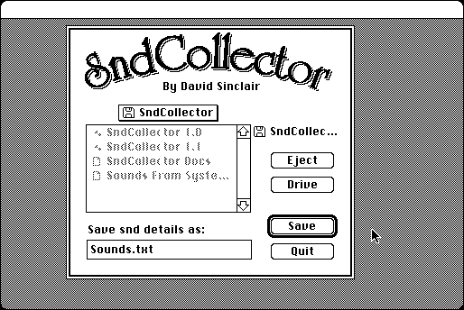

Download
snd-collector.zip (20K) SndCollector 1.1 repackaged into a zipped hfs disk image and checksum file. The disk image can be mounted with Mini vMac.
snd-collector.hqx (33K) SndCollector 1.1 in the original format.
copyright: David Sinclair
mod date: Jan 18, 1995
license: freeware
official url :
Dejal - Classic - Miscellaneous Tools
Collects information abouts sounds in Sound Mover and HyperCard files. Superseeded by SndCataloguer.

If you find these downloads useful, please consider helping the Gryphel Project, which hosts them.
Here are the md5 checksums for the downloads, signed with Gryphel Key 5:
--------- GRY SIGNED TEXT --------- a3090d8399045d8afb03c19b918cf9f9 snd-collector.zip 5d24fb13ebb5e3372b2784f62368cb85 snd-collector.hqx ------- BEGIN GRY SIGNATURE ------- Gry/4Xa8CFcUzxdN/A5dHPjnQiTDnHksR9UPvDpqS7sZR0D5IB4m+D4L+AWbkqaj qNIwxZcBKCv1XhjgptOhWQZeS2InDXmyY5RkwaNlQ958sgHP/1xobLqHvfbnokVW csJhskNTVs4RnAdHSYSuTU3c74fEATD80paZXmGntW168fD19zO+s7PlVRIh11yT -------- END GRY SIGNATURE --------